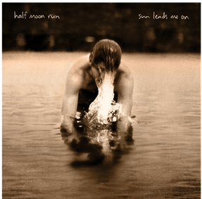
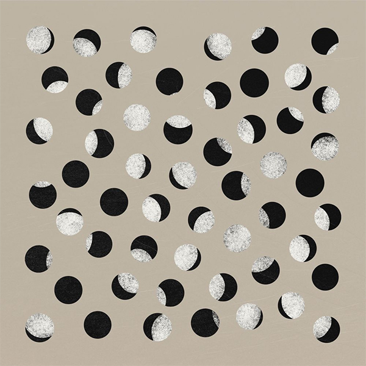

Dark Eyes is the debut studio album by the Canadian indie rock band Half Moon Run, released through Indica Records in Canada on March 27, 2012. Their debut single "Full Circle" reached number 29 on the Canadian rock/alternative chart in 2012.

Sun Leads Me On
Sun Leads Me On is the second studio album by Canadian indie rock band Half Moon Run. It was released through Indica Records in Canada on October 23, 2015 and through Glassnote/Universal in the rest of the world.
A Blemish in the Great Light
A Blemish in the Great Light is the third studio album by the Canadian indie rock band Half Moon Run, released in 2019. The album won the Juno Award for Adult Alternative Album of the Year at the Juno Awards of 2020.
Seasons of Change
Seasons of Change was released July 17, 2020 through Crystal Math/Glassnote Records. The six-track EP was recorded at the same time as A Blemish in the Great Light but was decided to be released separately.

Covideo
Covideo is a video album recorded during the pandemic and released September 4, 2020. It features intimate performances of 11 of their tracks. Take a look at the isolation videos below!